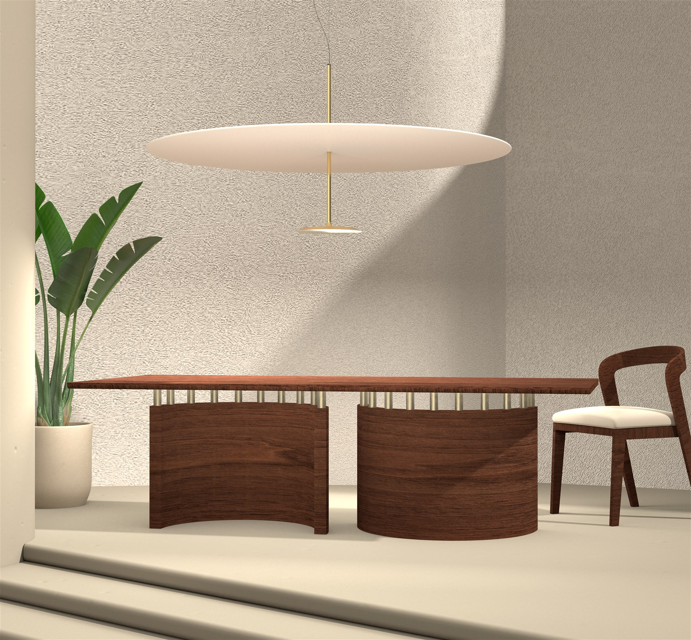
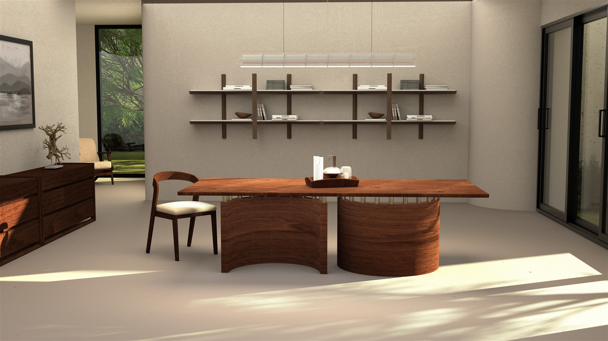

Ronchamp Table
Inspired by the monumental Ronchamp Chapel designed by Le Corbusier, this table brings the power of mass and organic forms into the center of everyday life. The uninterrupted, sculptural curves and the honest materiality of the table allow it to exist not merely as a piece of furniture, but as a silent yet dominant architectural object within the space.


"The pure honesty of the natural material and the solemn balance of asymmetrical forms perfectly embody the poetic nature of brutalism."
